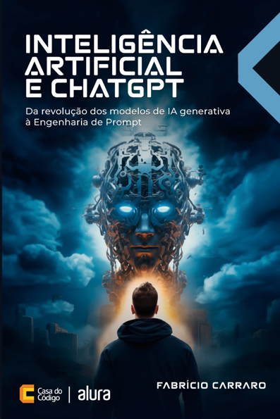
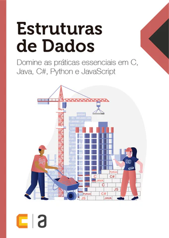
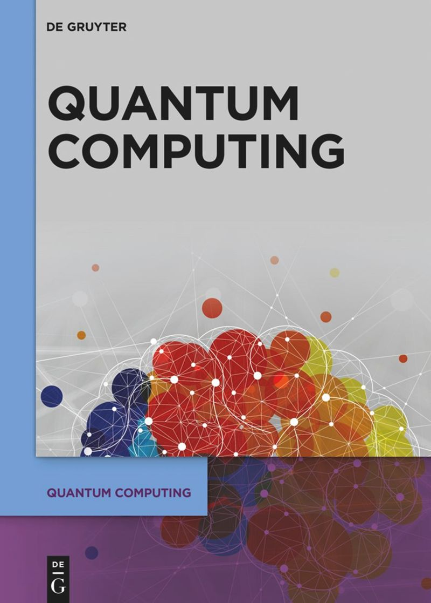

Inteligência Artificial e ChatGPT: Da revolução dos modelos de IA generativa à Engenharia de Prompt
Esse livro explica de forma clara como funcionam as Inteligências Artificiais modernas, como ChatGPT e outros LLMs. Aborda fundamentos de Machine Learning, redes neurais e engenharia de prompt, além de técnicas e aplicações práticas da IA no mundo real.

Estrutura Estruturas de Dados: Domine as práticas essenciais em C, Java, C#, Python e JavaScript
Esse livro apresenta os fundamentos das estruturas de dados, essenciais para criar algoritmos e sistemas eficientes.
Aborda estruturas como vetores, pilhas, filas, listas, árvores e grafos, mostrando como funcionam e como aplicá-las em linguagens como Python, Java, C#, C e JavaScript para resolver problemas no desenvolvimento de software.

Quantum computing and artificial intelligence: status and perspectives
Artigo científico que discute a relação entre computação quântica e inteligência artificial. O trabalho apresenta o estado atual dessas tecnologias,
explica seus princípios fundamentais e analisa como a computação quântica pode potencializar técnicas de IA no futuro, além de discutir desafios, aplicações e perspectivas de pesquisa nessa área emergente.